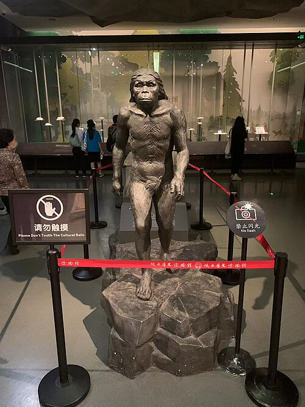
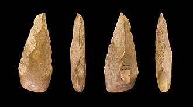
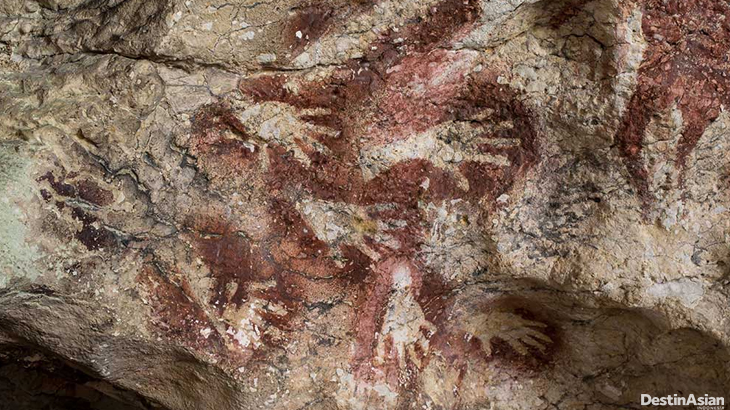
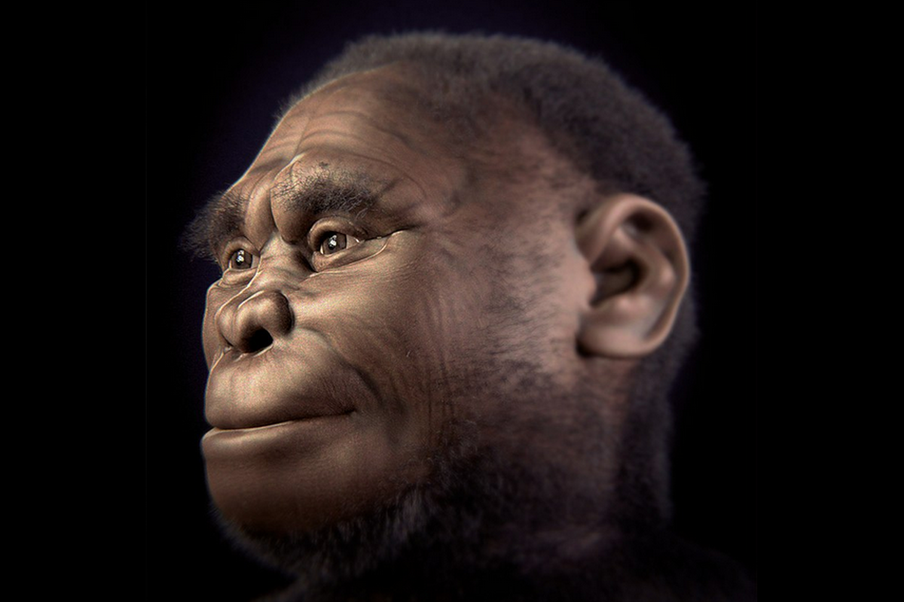
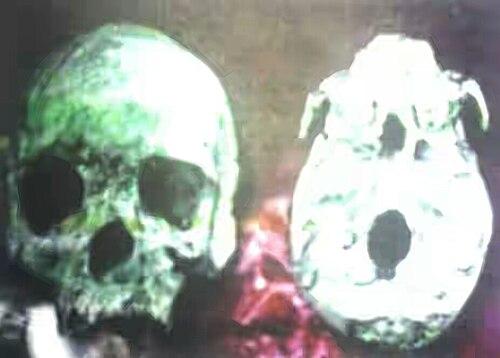
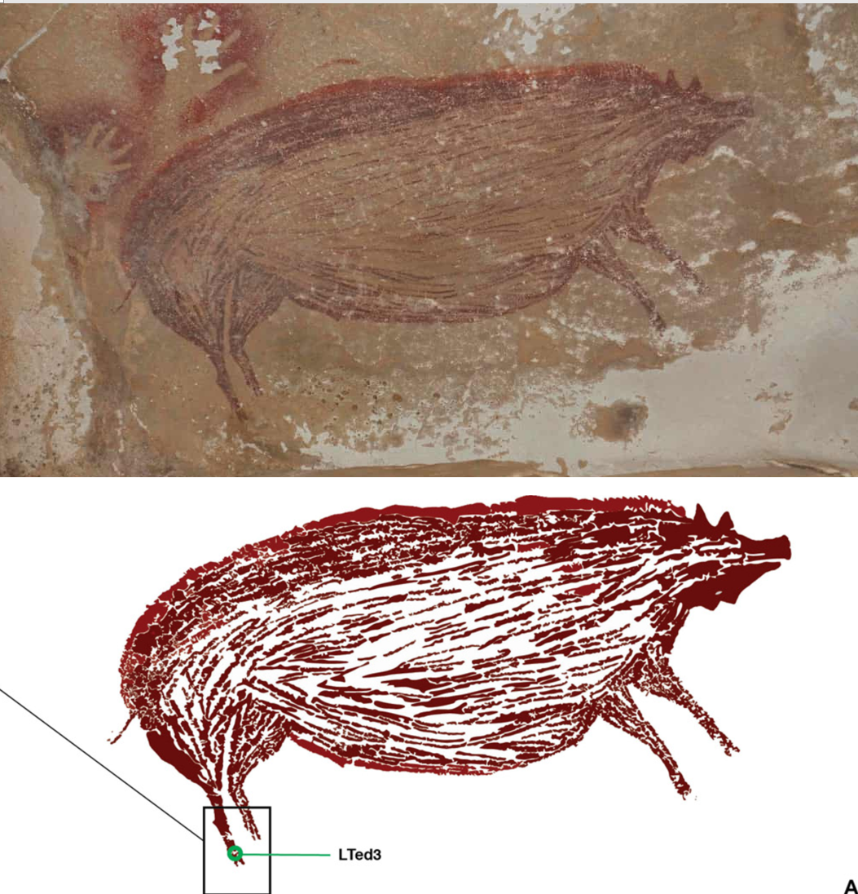
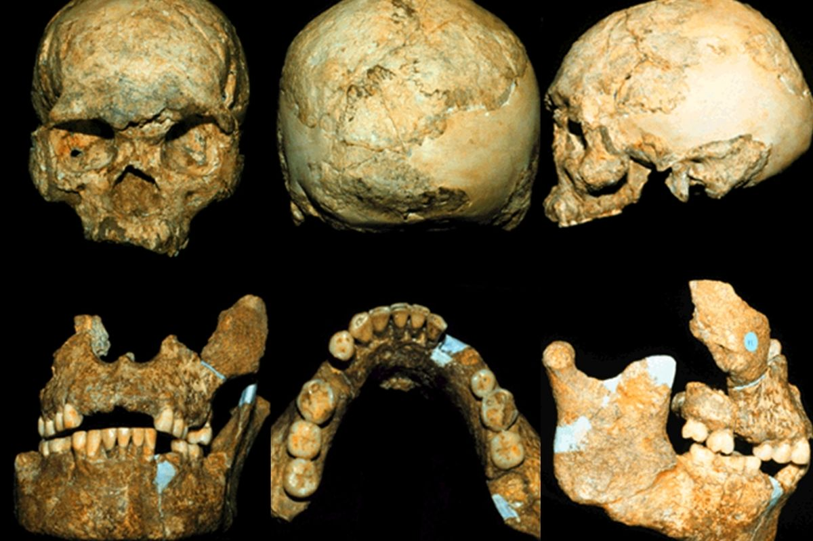

Zaman Manusia Purba
Penemuan:
0/7
Pengetahuan Meningkat!
Baca juga artikel Kerajaan Nusantara
Quiz Manusia Purba
Memuat pertanyaan...
Pertanyaan Berikutnya
Selesaikan Quiz







Judul Artefak
Baca artikel lebih lanjut
Tutup
Kembali ke Gerbang Silam